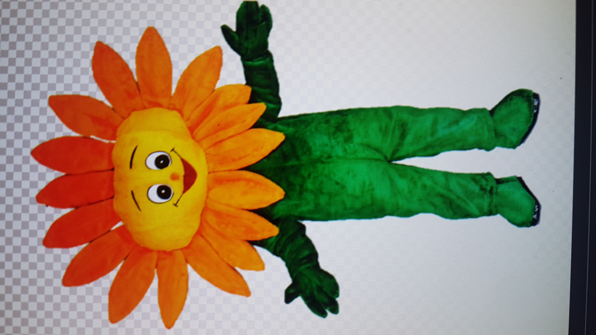

Opdracht 3: Semantic HTML
Kikkers
Kikkers zijn amfibieën en er zijn tegenwoordig ruim 7300 verschillende soorten kikkers beschreven. In de link hieronder zijn 3 soorten uitgelicht.
Voor meer informatie over Kikkersoorten klik hier
Bye Bye

2021 test footer
over mij
adres